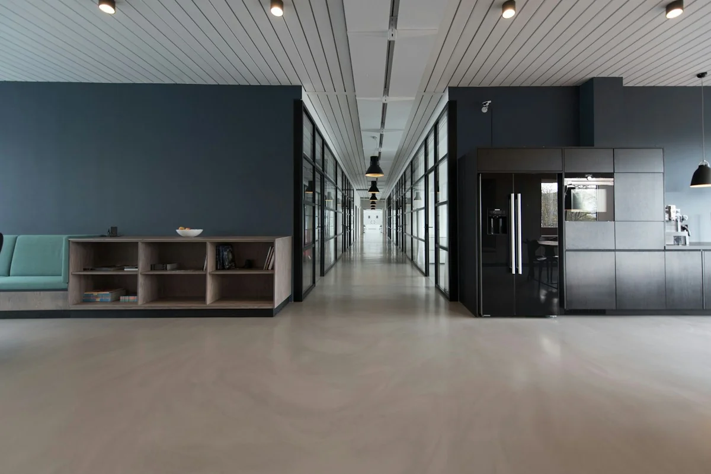

About Stackly
A people practice built on care, clarity, and craft.
We help organisations bring their people operations into one considered experience — so everyday work feels calmer, clearer, and more human.
Our story
Built from the belief that HR should feel human.
Stackly began in a small Salem studio with a simple observation: the systems meant to support people at work often got in the way of them. Too many tools, too many handoffs, and too little room for the moments that actually matter.
So we set out to design something different — a quieter, more connected approach to people operations. One that treats employees as whole people, gives HR teams room to think, and makes the everyday feel a little lighter.
Today, we work alongside growing teams across the world, helping them build the kind of workplace people are glad to be part of.
Great HR isn't louder. It's quieter, clearer, and always in service of people.
The Stackly belief
What guides us
Principles we practise, not just print.
Four quiet commitments shape how we build, how we work, and how we show up for our partners.
People over process.
Systems exist to support people — not the other way around. Every decision starts with the human at the centre.
Simplicity is a kindness.
When things are clear, people move with confidence. We remove noise so the work itself can stay in focus.
Details matter, quietly.
Thoughtful design is felt more than seen. We sweat the small things so the experience feels effortless.
Built to last, made to evolve.
We build foundations that hold steady and can grow with the teams and businesses they serve.
A few numbers
Steady growth, quietly done.
We measure progress less in headlines and more in the partners who stay, grow, and send others our way.

Our approach
A connected foundation, not another tool.
We don't add more dashboards. We bring the parts of people operations that already exist into one considered experience — so information flows, decisions get easier, and nothing important falls between the gaps.
- Considered by default 01 / Design
- Connected end to end 02 / Systems
- Grounded in real teams 03 / Practice
The people behind Stackly
Small team. Big care.
A close-knit group of designers, engineers, and people practitioners — building the workplace experiences we wish we'd had.
Milestones
A few moments along the way.
The work has grown slowly and steadily — the way things built to last usually do.
The beginning
Stackly founded in Salem with three people and one belief: HR should feel human.
First 50 partners
Small and mid-sized teams across India bring Stackly into their everyday people operations.
One connected experience
Our first unified platform launches, bringing records, operations, and development into one place.
Expanded across regions
Partners in Southeast Asia and the Middle East join, bringing new perspectives and needs.
250+ partner teams
A growing community of teams building more thoughtful workplaces with Stackly.
Still listening, still refining
Every release starts with a conversation, not a roadmap. That's how it will stay.
Work with us
Let's build a workplace people are glad to be part of.
Whether you're just starting out or rethinking how HR works across your organisation, we'd love to hear where you are today.